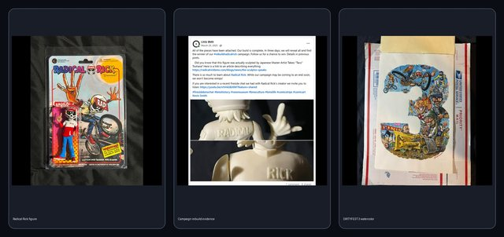
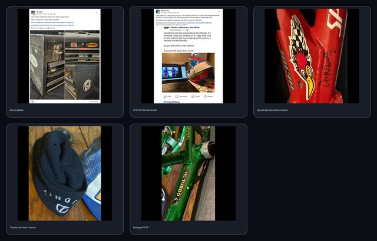
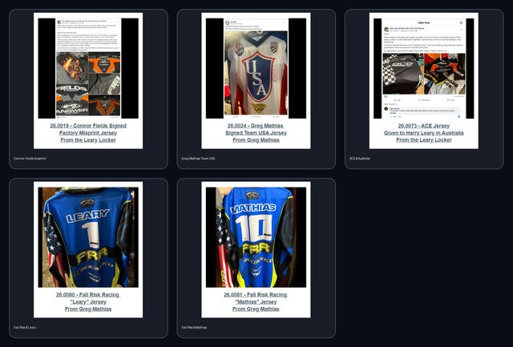
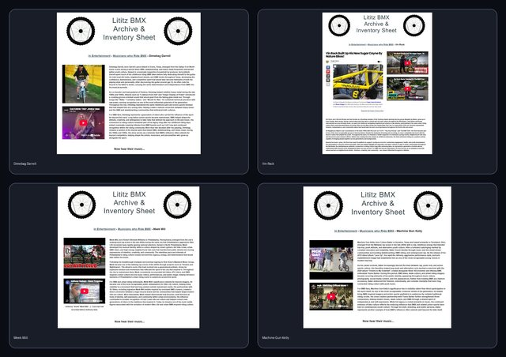
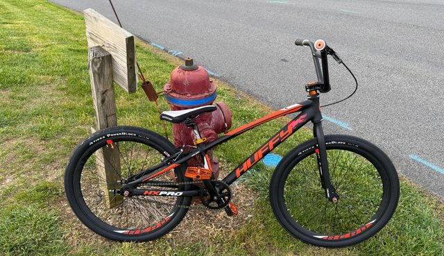
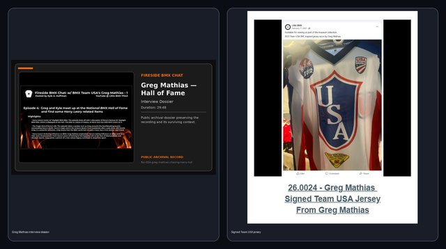

Ready to play
Lititz BMX Digital Escape Rooms
Enter six evidence-driven archive adventures. Examine authentic artifacts, campaign captures, publication records, interviews, and collection documentation; then use the Workbench to restore each story.
Enter the evidence